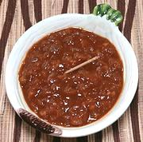

|
Monkeygland SauceSouth Africa - Monkeygland Sauce | ||||
| Makes: Effort: Sched: DoAhead: |
2 cups ** 40 min Yes |
A Braai (BBQ) Sauce / marinade wildly popular in South Africa, spreading everywhere South Africans have moved to. No actual monkeys are harmed in making this sauce. | |||
|
2 6 1/2 3 ------- 2/3 1/3 1-1/2 2 1 1 1/3 1/2 (opt) |
cl oz in T --- c c T T t T c t |
Garlic Onion Ginger root Oil -- Seasonings Tomato Sauce (1) Chutney (2) Worcestershire Sauce Wine Vinegar, red Brown Sugar Dijon Mustard Broth or Water Salt Tabasco Sauce |
Make - (20 min)
|